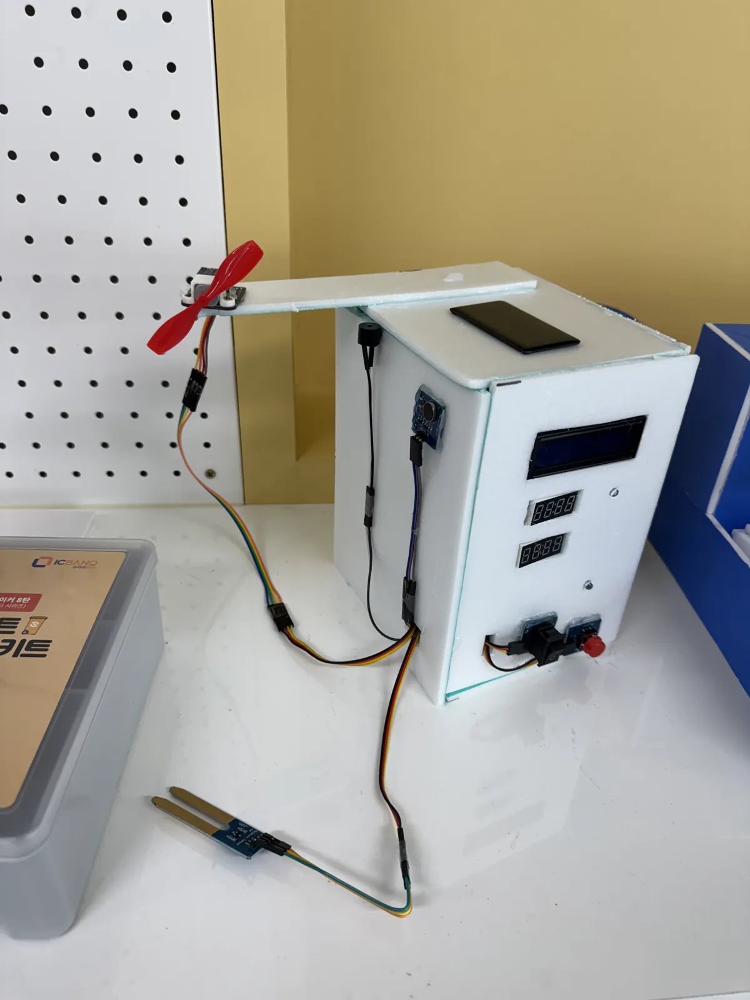

프로젝트 개요
2025 선후배와 함께하는 코딩 페스티벌 참가작으로 제작한 스마트
식물 관리 타이머 시스템입니다. 여러 명이 하나의 식물을 키울 때
발생하는 중복 급수 문제를 해결하기 위해 개발되었습니다.
주요 기능 / 내용
- 습도 모니터링
- LCD 현재 상태 디스플레이
- 마지막으로 언제 급수했는지 알려주는 타이머
- 식물 ㄹㅈㄷ 복지 선풍기
- 태양광 전원 시스템(장식)
- 부저와 진동 모터로 급수 알림
프로젝트 사진

식물 타이머 완성 시제품
나의 역할
1인 개발
- 기획
- 아두이노 프로그래밍
- 아두이노 배선
- 발표
- 케이스 모델 제작
- 그 외 다수